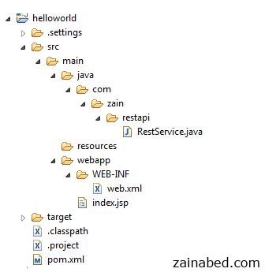
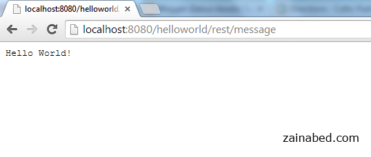

Introduction
Following is simple JAX-RS tutorial, which sends “Hello World” text as response string using JAX-RS API and Jersey implementation. Technologies and Tools used in this article:
- JDK
- Eclipse
- Tomcat
- Maven
- Jersey 1.8
Create Maven Web Project
Create a Maven web project and name it “helloworld” .
- File -> New -> Other -> Maven Project -> Next
- Select maven-archetype-webapp
- Select Next
- Type Group Id, Artifact Id and Package name
- And select Finish
Add Project Dependencies
Add Jersey repository using Maven. Use Maven URL to get appropriate repository.
Now update pom.xml file by adding following dependency.
File : pom.xml
<dependency>
<groupId>com.sun.jersey</groupId>
<artifactId>jersey-server</artifactId>
<version>1.8</version>
</dependency>
Create REST Service
Now it is time to create a class which serves as REST service.
Create class named RestService and a public method getMessage
package com.zain.restapi;
import javax.ws.rs.core.Response;
import javax.ws.rs.GET;
import javax.ws.rs.Path;
@Path("/message")
public class RestService {
@GET
public Response getMessage() {
String message = "Hello World!";
return Response.status(200).entity(message).type("text/plain").build();
}
}
Note:
@Pathannotation act as routing which map incoming URI to appropriate Class Update web.xml for Jersey configuration In web.xml, add servlet with classcom.sun.jersey.spi.container.servlet.ServletContainer
File : web.xml
<web-app version="2.4"
xmlns="http://java.sun.com/xml/ns/j2ee"
xmlns:xsi="http://www.w3.org/2001/XMLSchema-instance"
xsi:schemaLocation="http://java.sun.com/xml/ns/j2ee
http://java.sun.com/xml/ns/j2ee/web-app_2_4.xsd">
<servlet>
<servlet-name>jersey-serlvet</servlet-name>
<servlet-class>
com.sun.jersey.spi.container.servlet.ServletContainer
</servlet-class>
<init-param>
<param-name>com.sun.jersey.config.property.packages</param-name>
<param-value>com.zain.restapi</param-value>
</init-param>
<load-on-startup>1</load-on-startup>
</servlet>
<servlet-mapping>
<servlet-name>jersey-serlvet</servlet-name>
<url-pattern>/rest/*</url-pattern>
</servlet-mapping>
</web-app>
Directory Structure
Final project directory structure

Demo
To execute this application you need to type following URL
http://localhost:8080/{project name}/{jersey servlet name}/{@path param value}
here is actual URL for this tutorial.
http://localhost:8080/helloworld/rest/message

Source Code
Download source code from this Github